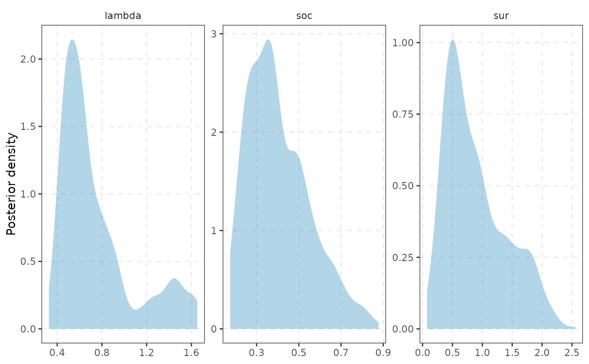

tidy() summarises the posterior of the coefficients: response, term,
estimate (posterior mean), std.error (posterior sd), conf.low,
conf.high (equal-tailed interval). glance() is a one-row summary:
K, p, nobs, ndraw, method, logml, accept, plus the posterior
means of the hyperparameters when they were estimated.
Usage
# S3 method for class 'bvarm'
tidy(x, conf.level = 0.9, ...)
# S3 method for class 'bvarm'
as_tibble(x, ...)
# S3 method for class 'bvarm'
glance(x, ...)
# S3 method for class 'bvarm'
autoplot(object, type = c("coef", "hyper", "trace"), conf.level = 0.9, ...)
# S3 method for class 'bvarm'
plot(x, ...)Arguments
- x, object
a
bvarm()fit.- conf.level
credible level of the interval (default 0.90).
- ...
unused (
plot()passes them toautoplot()).- type
"coef","hyper"or"trace".
Value
tidy(), glance(): a tibble; autoplot(): a ggplot.
Details
autoplot() shows the coefficient intervals (type = "coef"), the posterior
densities of the hyperparameters ("hyper") or their trace plots
("trace"; the coefficient draws if there are no hyperparameters).
See also
Other Bayesian VAR:
autoplot.mcmc_diagnostics(),
bvarm(),
mcmc_diagnostics(),
prior_minnesota(),
prior_triangular(),
volatility()
Examples
# \donttest{
fit <- bvarm(yraw, p = 2, ndraw = 500, nburn = 300)
tidy(fit)
#> # A tibble: 21 × 6
#> response term estimate std.error conf.low conf.high
#> <chr> <chr> <dbl> <dbl> <dbl> <dbl>
#> 1 infl infl.l1 1.53 0.0593 1.43 1.61
#> 2 infl unemp.l1 -0.258 0.0595 -0.351 -0.161
#> 3 infl rate.l1 -0.0460 0.0282 -0.0904 -0.00161
#> 4 infl infl.l2 -0.531 0.0615 -0.626 -0.435
#> 5 infl unemp.l2 0.219 0.0576 0.128 0.312
#> 6 infl rate.l2 0.0461 0.0273 -0.000270 0.0881
#> 7 infl const 0.246 0.0914 0.0904 0.400
#> 8 unemp infl.l1 0.0186 0.0632 -0.0837 0.118
#> 9 unemp unemp.l1 1.33 0.0641 1.23 1.44
#> 10 unemp rate.l1 -0.0220 0.0293 -0.0689 0.0276
#> # ℹ 11 more rows
glance(fit)
#> # A tibble: 1 × 10
#> K p nobs ndraw method logml accept lambda soc sur
#> <int> <int> <int> <int> <chr> <dbl> <dbl> <dbl> <dbl> <dbl>
#> 1 3 2 213 500 niw-minnesota -406. 0.556 0.747 0.405 0.885
autoplot(fit, "hyper")

# }